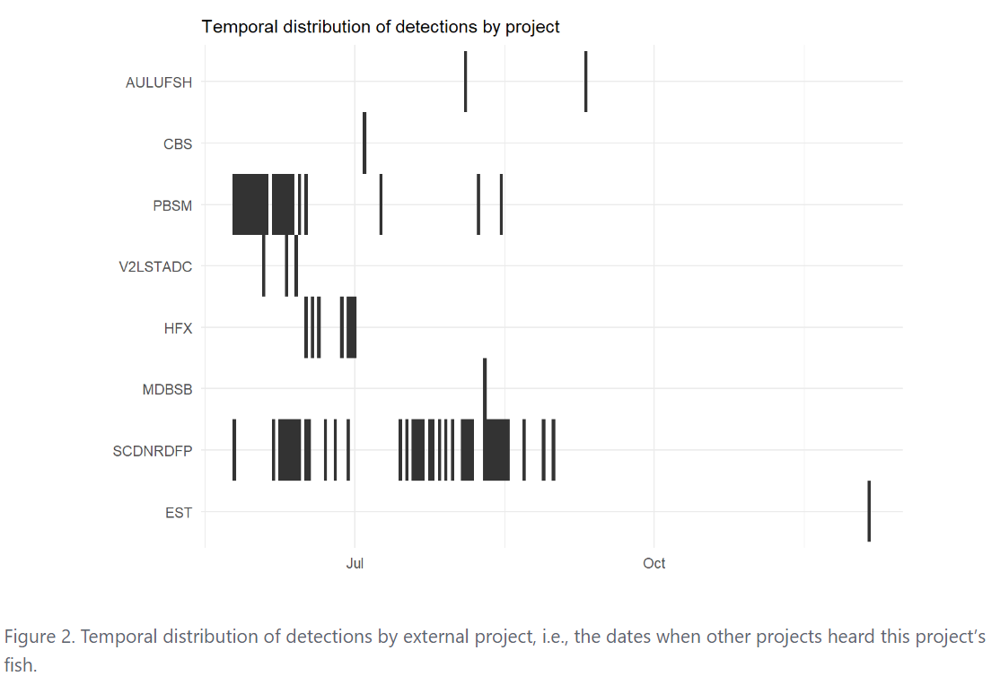

entiendo /ˌenˈtjendo/ [ˌẽn̪ˈt̪jẽn̪.̪o]
Spanish, 1st person indicative; “I understand”
otndo /ˌoʊˈtjendo/ [ˌoʊ̪ˈt̪jẽn̪.d̪o]
English, bad pun; “I understand (OTN data)”
The purpose of otndo is to provide a high-level summary of your acoustic telemetry transmitter matches from the Ocean Tracking Network, all while putting the “network” back in “tracking network” by noting the related projects and investigators.
Installation
You can install the most-up-to-date version from R-universe or GitHub.
R-universe:
install.packages(
"otndo",
repos = c(
"https://mhpob.r-universe.dev",
"https://cloud.r-project.org"
)
)GitHub:
# install.packages("remotes")
remotes::install_github("mhpob/otndo")Tag push summary example
This is a basic example of how you might use otndo to summarize your transmitter data:
# Download some example data
td <- file.path(tempdir(), "otndo_test_files")
dir.create(td)
download.file(
paste0(
"https://members.oceantrack.org/data/repository/pbsm/detection-extracts/",
"pbsm_matched_detections_2018.zip/@@download/file"
),
destfile = file.path(td, "pbsm_matched_detections_2018.zip"),
mode = "wb"
)
unzip(file.path(td, "pbsm_matched_detections_2018.zip"),
exdir = td
)
# Make a tag push summary
library(otndo)
make_tag_push_summary(
matched = file.path(td, "pbsm_matched_detections_2018.csv")
)You will get a report in your working directory with a few goodies!
A summary of the number of matched individuals and detections by researcher and project: 
The overall extent of the projects to which your tags have been matched: 
When your fish were heard in each project: 
The ever-ubiquitous “abacus plot”, showing when each tag was heard, colored by project:
An interactive map showing detections by receiver:
A general estimate of the number of transmitters that were active at a given date:
Receiver push summary example
This is a basic example of how you might use otndo to summarize your receiver data:
# Download some example data
## Deployment metadata
download.file(
paste0(
"https://members.oceantrack.org/data/repository/pbsm/data-and-metadata/",
"archived-records/2018/pbsm-instrument-deployment-short-form-2018.xls/@@download/file"
),
destfile = file.path(td, "pbsm-instrument-deployment-short-form-2018.xls"),
mode = "wb"
)
## Qualified detections
download.file(
paste0(
"https://members.oceantrack.org/data/repository/pbsm/detection-extracts/",
"pbsm_qualified_detections_2018.zip/@@download/file"
),
destfile = file.path(td, "pbsm_qualified_detections_2018.zip")
)
unzip(file.path(td, "pbsm_qualified_detections_2018.zip"),
exdir = td
)
## Unqualified detections
download.file(
paste0(
"https://members.oceantrack.org/data/repository/pbsm/detection-extracts/",
"pbsm_unqualified_detections_2018.zip/@@download/file"
),
destfile = file.path(td, "pbsm_unqualified_detections_2018.zip")
)
unzip(file.path(td, "pbsm_unqualified_detections_2018.zip"),
exdir = td
)
# Make a receiver push summary
make_receiver_push_summary(
qualified = file.path(td, "pbsm_qualified_detections_2018.csv"),
unqualified = file.path(td, "pbsm_unqualified_detections_2018.csv"),
deployment = file.path(td, "pbsm-instrument-deployment-short-form-2018.xls")
)A summary of the number of matched individuals and detections by researcher and project:

The overall extent of the projects associated with the tags your receivers have heard:
When your receivers heard each project’s fish:

A Gantt chart of your receivers’ deployments:

The number of detections and individuals per receiver:

An interactive map showing detections by receiver:

A summary of your unmatched detections, including those that are likely false…

…and those that may be real!

A summary of when the unmatched detections occurred, by receiver:

Getting in contact
If something doesn’t work the way it should or if you just need a little help, feel free to open an issue on GitHub or email me (Mike O’Brien: obrien@umces.edu) directly.